定义
对当前业务具有参考价值的统计数据
- 当前业务有价值
- 不是所有的数据都叫指标
- 与当前业务无关的意义也不大
- 统计数据
- 数据不是凭空产生的
- 不能脱离现实
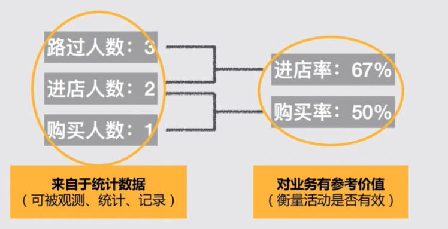
常用的数据指标
- 用户数据——谁
- 存量——DAU/MAU
- 增量——新增用户
- 健康程度——留存率
- 从哪来——渠道来源
- 行为数据——干了什么
- 次数/频率——PV,UV,访问深度
- 路径走通程度——转化率
- 做了多久——时长
- 质量——弹出率
- 业务数据——结果怎样
- 总量——GMV——访问时长
- 人均——ARPU/ARPPU——人均访问时长
- 人数——付费人数——播放人数
- 健康程度——付费率，付费频次——观看率
- 被消费对象——SKU视角——被消费内容视角
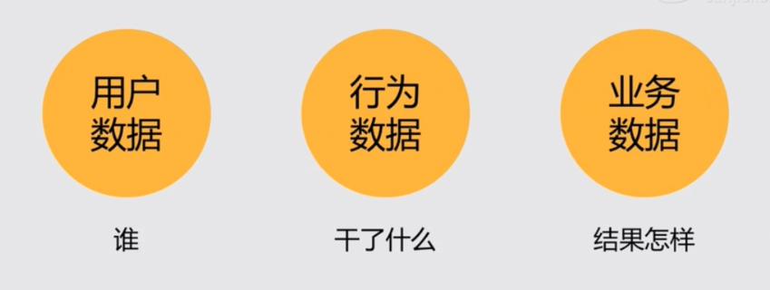
用户数据
日活/月活
Daily/Monthly Active User
日活
Daily Active User
- Daily 一自然日
- 注意：如果是跨时区的产品，则关心最近的24小时
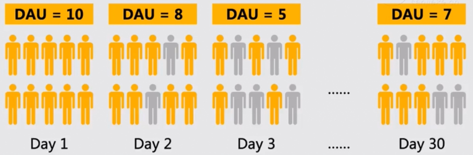
月活
Monthly Active User
- 上图中月活 = 10
- MAU <= 最大日活 + 新增用户 <= 总用户量
- 单纯将日活累加而不去重，是没有任何参考价值的
- MAU != 当月各个日DAU之和，务必去重才有观察的意义
活跃
数据统计系统的定义
基于事件上报：有事件上报==>该用户活跃
预制报表系统（友盟，百度统计，GA，….）都是基于事件上报进行统计的
上报事件会有坑（因为是假定了事件上报一定来自用户主动操作，如果下面案例就会出错）
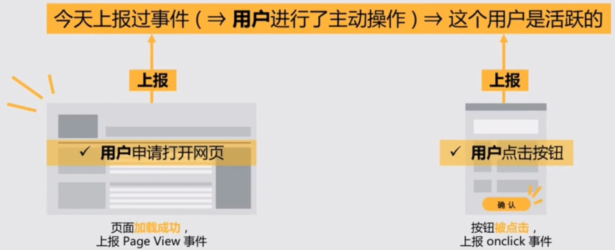
案例
产品经理：我要统计我们发下去的PUSH，我得知道到底有多少条PUSH是到达了用户的设备上的。不然推送转化根本无法优化。
程序员：这个简单，可以做。我在后台写一个Service，APP收到PUSH的时候就给友盟上报一个事件说收到了。
结果
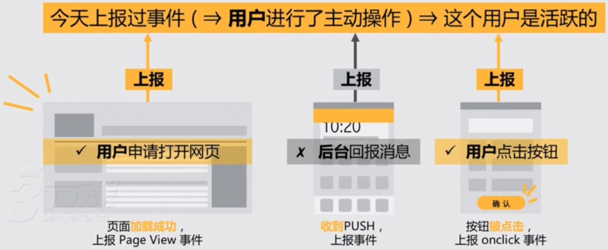
业务上的定义
- 基于关键时间上报：用户执行了关键时间==>用户活跃
- 存在运维成本：需要不断维护日活事件列表
- 存在沟通成本：团队内外对“活跃”的认识需要统一
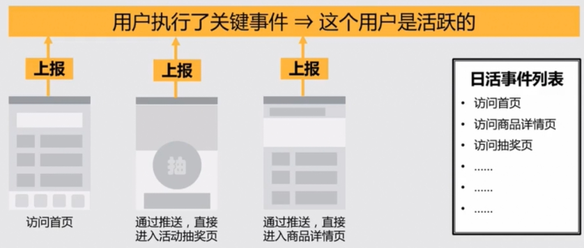
用户
到底是通过用户人来统计还是通过访问的机器数量来统计？
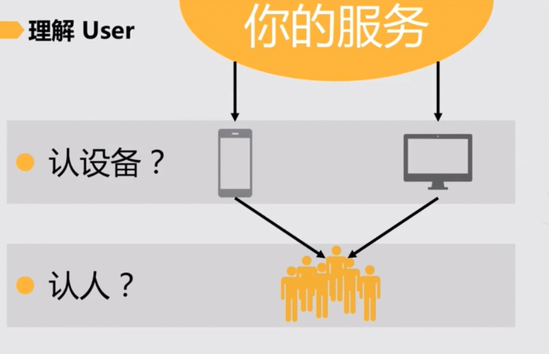
认人
- 给每位注册用户一个唯一的专属ID
- 只适用于注册/登录环境，未登录的用户会被漏掉
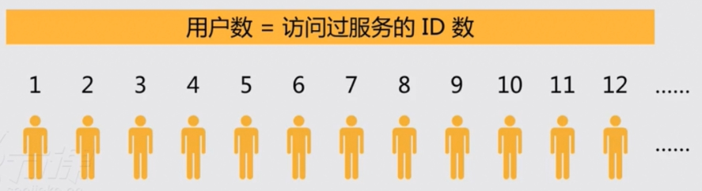
认设备
- 在网页cookie中埋下一段长随机字符串，作为设备唯一标识符
- 无法对应设备背后的用户
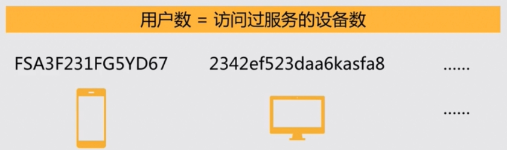
新增用户
不同角色对新增用户的理解各不相同·
- 渠道商：只要点了你们的产品的下载按钮就算一次新增了！
- 运营：总得下载成功了才算吧！而且一个用户一天最多就算一次
- 产品：我们按启动量算吧。没打开APP也是则数据质量太差了
- 开发：注册了才叫新增用户，否则后台压根没这条数据
每个人都在提新增，但是每个人嘴里讲的新增其实都不一样
选择合适的节点
选择合适的节点定义新
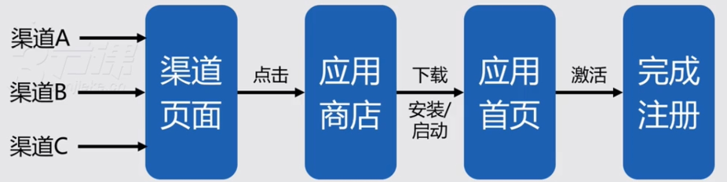
| 比对 | 点击渠道链接 | 下载 | 安装,启动 | 激活 |
|---|---|---|---|---|
| 优势 | 统计简单 | 真实反映了用户的实际意愿 | 离激活最近，便于统计 | 最真实的数据 |
| 劣势 | 离激活环节最远，转化率太差 | 数据源可信度存疑，无法避免刷量 | 渠道不一定配合，仍然无法避免刷量 | 渠道费用激增，统计复杂 |
| 适用场景 | 量级不大,免费渠道不需要做精细结算 | 渠道依赖应用商店且没有更好的渠道 | 自己较强势，可给渠道制定统计规则 | 对用户质量要求高且产品ARPU高 |
用适当的方法辨别新
- 基于设备：通过不同平台的表示判断这个设备是否是第一次登陆
- 基于账号：通过对比用户是否存在而区分是否是新用户
留存率
之前的例子为例
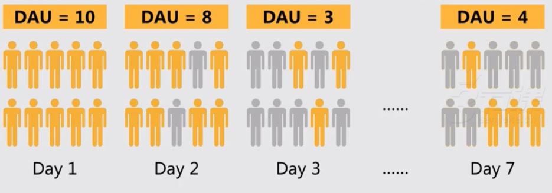
算法一
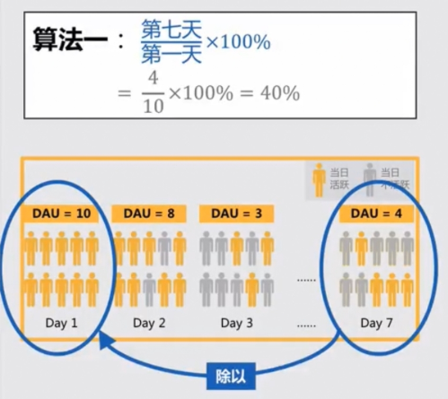
算法二
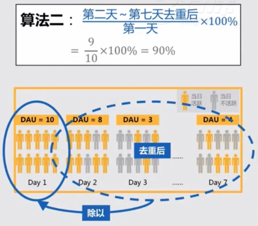
案例对比渠道质量
当我们对比渠道质量的时候，可以使用第一种算法进行计算
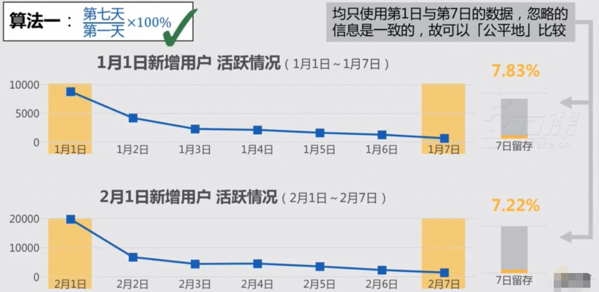
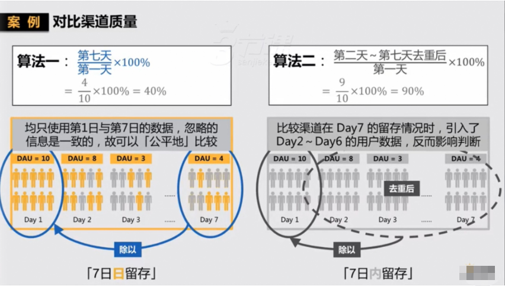
案例用户访问集中时
当用户访问特别集中，只看Day7来评价，往往不能反映真实情况，此时关注7日内活跃情况更能描述渠道质量
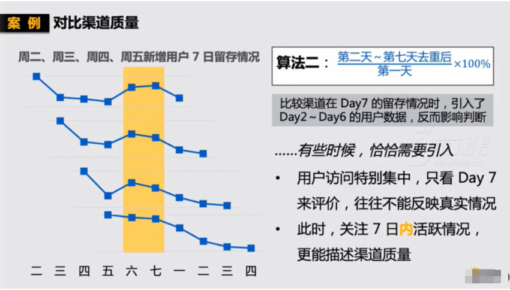
算法三
有些7日留存计算是一共需要计算8天，从第0天开始计算
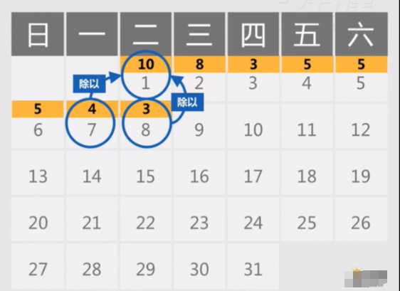
总结
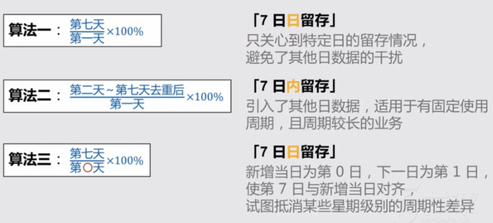
- 日留存
- 了解某一渠道的质量
- 以天为单位，衡量这个渠道来的用户当下/接下来的表现
- 以【X日日留存】作为比较标准时，可以避免其他日数据的干扰
- 周/月留存
- 以周/月为单位，衡量产品的健康情况，观察用户在平台上的粘性
- 务必去重
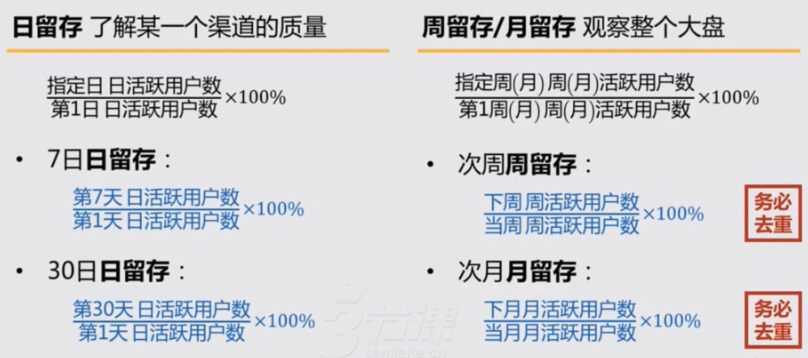
行为相关数据指标
案例
- 5个用户来到网站，总共访问了13次首页
- 13次首页访问中，有8次都会点开课程详情
- 最后有2个用户注册了会员
- 这2个人中后续有1个用户购买了课程
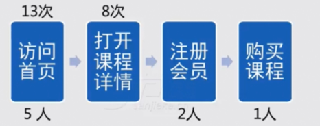
- 来了多少用户？访问情况如何？
- 来了5个。访问13次，人均2.6次
- 首页转化效果如何？
- 有8/13=62%的人进入课程详情页
- 有多少注册了的？
- 今天来了5个人里有2个注册的，占40%
- 注册的有多少付费的？
- 这2人中有1个付费的，占50%
PV和UV
- Page Views——页面浏览量——次数
- Unique Visitors——独立访问数——人数
转化率
PV/PV和UV/UV
- 详情页的评论转化率 = 评论发表PV/详情页PV
- 用户的评论转化率 = 评论发表UV/详情页UV
PV/UV
- 人均行为次数
- 人均查看数 = 详情页PV/详情页UV
- 人均评论次数 = 评论发表PV/评论发表UV
访问深度
- 用户对产品的了解程度
- 算法一：用户对某些关键行为的访问次数
- 算法二：将网站内容/功能分成几个层级，以用户本次访问过最深的一级计算
访问时长
- web时代
- 页面打开时长
- 但是如果一直没关，或是上个洗手间
- APP时代
- 前台驻留时长
- 如果手机放在桌子上没动
- 物联网
- 摄像头观察瞳孔是否注视屏幕
- 需要设备的隐私授权
弹出率
- A页面弹出率
- 1/3 = 33.3%
- B页面弹出率
- 2/4 = 50%
- C页面弹出率
- 3/3 = 100%
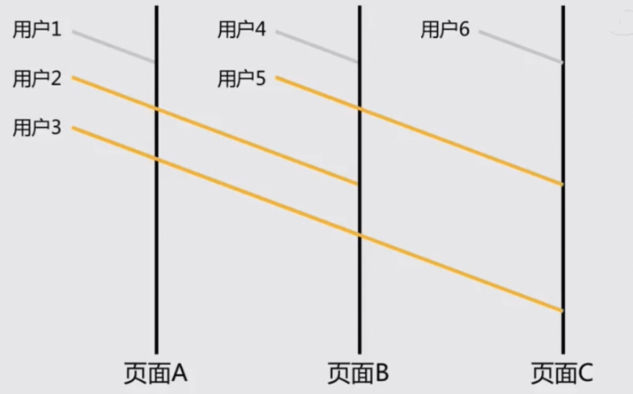
业务相关数据指标
案例
- 一共卖了多少钱？
- 消费水平怎么样？
- 来了多少人？
- 有多少人买东西了？有都少人是老顾客？
- 我们的商品好不好卖？
常用业务指标
| 直接付费 | 适用场景 | 解决什么问题 | 非直接付费 |
|---|---|---|---|
| GMV(成交总额) | 总量 | 描述交易的金额总规模 | 目标完成数（报名，点击，分享…） |
| ARPU/ARPPU(平均消费) | 人均 | 单个用户的共享程度 | 人均访问时长 |
| 付费人数 | 人数 | 描述原以为服务付费的人数总规模 | 完成人数 |
| 付费率/付费频次 | 健康程度 | 描述总体上的用户付费意愿评判一个服务的健康程度 | 完成率 |
| SKU视角(商品视角) | 被消费对象 | 需要分析消费品本身的运营情况 | 被消费内容视角 |
选好数据指标通用方法
- 从业务的最终目的出发梳理业务模块
- 判断业务模块所属类型
- 根据业务模块所属类型选择数据指标
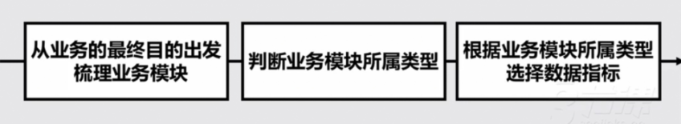
梳理业务模块
案例1
- 我要卖货
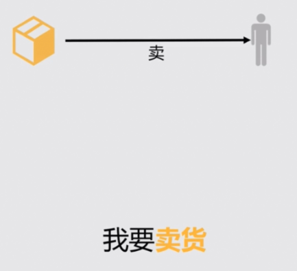
- 我要通过文章来卖货
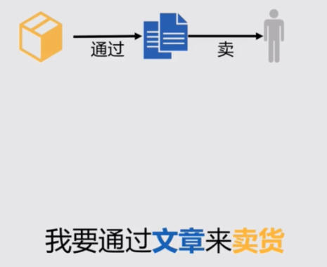
我要通过社区创作的文章来卖货
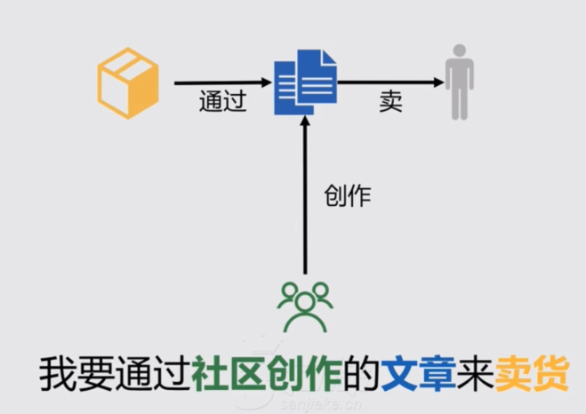
我要通过社区创作的优美的文章来卖货
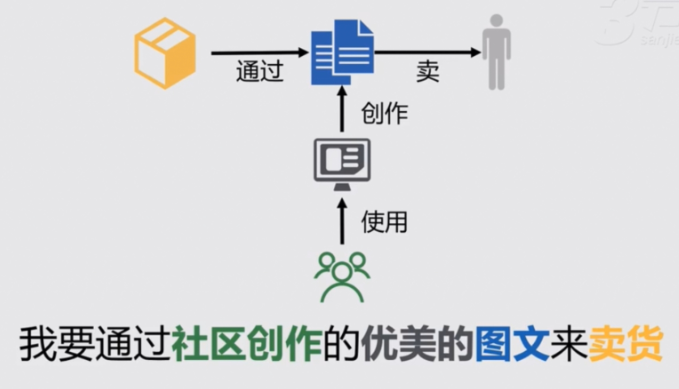
我们可以吧目的和手段进行拆分
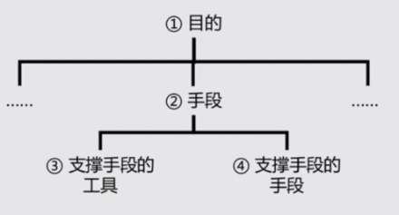
再来分析刚才的例子
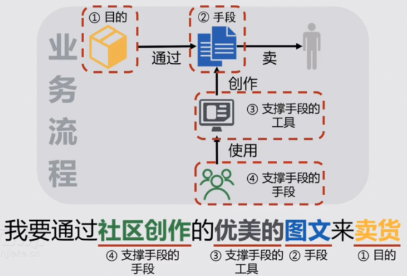